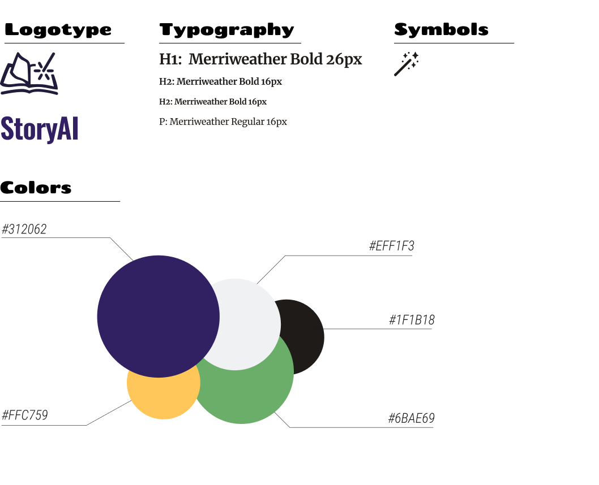
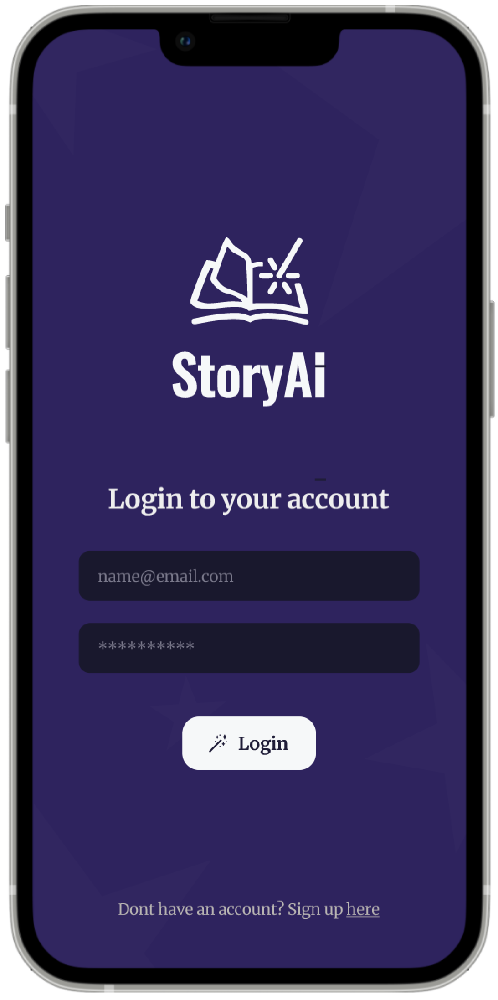
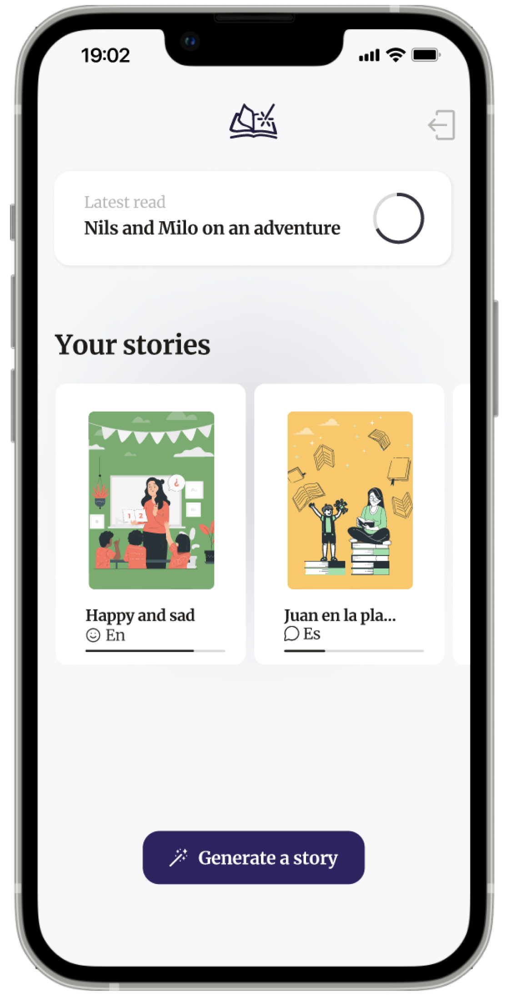
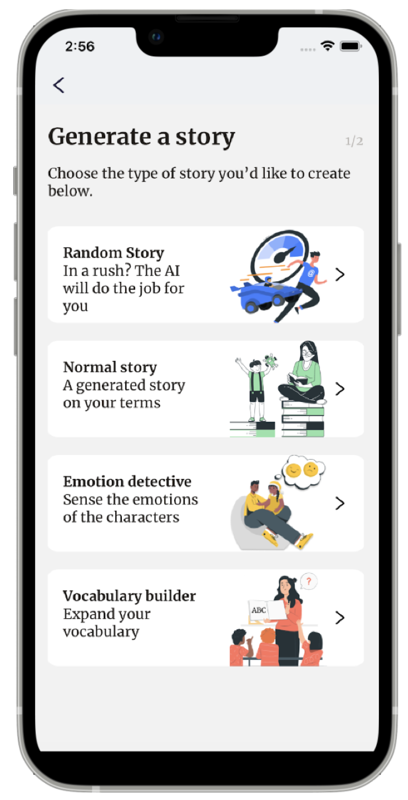
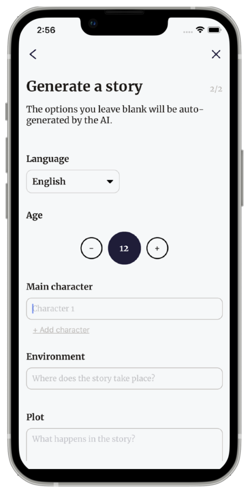
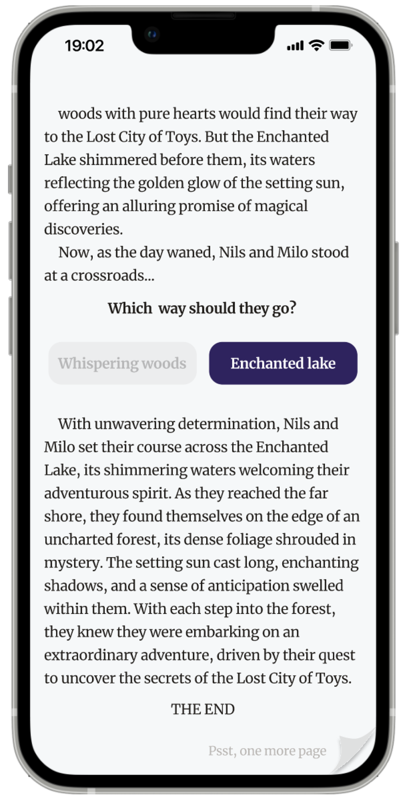
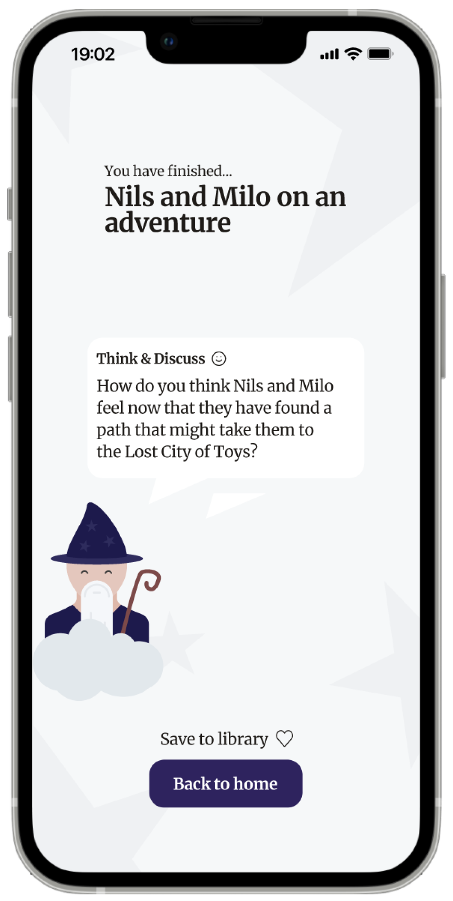

Task
In a group project for a course called Prototype Development in Mobile Applications, the task was to create an interactive mobile application with the following requirements:
The workflow should follow an agile approach.
The application should be implemented using a framework of our choice.
A design process should be followed, with a primary focus on delivering a well-functioning, fully implemented application.
Since no one in the group had created a native application or implemented AI as a function in a system before, this became the focus of the project.
Concept Idea
Since ChatGPT was relatively new at the time, we decided to incorporate AI into our project. We also wanted to develop a native mobile application for children. Combining these
ideas, we came up with the concept of an application that allows users to create customized stories for children with the help of generative AI.
Process
The project was conducted through sprints with an agile workflow where we every other week presented our work and discussed problems, findings and solutions with other groups.
The group members had different roles that we had extra responsibilities over, and I was responsible over the front-end development and graphic designs.
Project focus
Since the primary goal of this project was to deliver a fully implemented, functional application, we prioritized development over design, dedicating
most of our time working on the Front-End and the generative AI.
Target Group
The target audience for this app includes both children who are old enough to use smart devices and caregivers who want to create stories for them.
Given the wide age range within our audience, we carefully considered this when designing the UI.
Generative AI
To enable communication between OpenAI's API and our application, we used Express.js, which allows us to define and manage a POST API endpoint that responds to client requests.
Graphic profile

Result
We manage to deliver a fully implemented application that allowed the user to create costumized stories with the use of generative AI.
The result is an application where a user can AI-generate stories that offer three interactive moments per story and a final question. The story is divided into four parts: Introduction, Conflict, Climax, and Resolution, with the interactive moments provided at each breakpoint in between. Stories can be generated from four different categories:
Random story (also known as quick story) - a story is generated instantly without the user needing to provide any input.
Normal story - A regular story that takes the user's instructions before generation.
Emotion detective - Similar to a regular story, but at the end, a question is asked about an emotion that may have been experienced during the story.
Vocabulary builder - En saga som ska utforska svårare ord. Denna kategori är inte utvecklad till fullo så den fungerar i dagsläget som en vanlig saga men tanken är att den ska highlighta svårare ord och beskriva dem, samt ställa någon fråga om något ord i slutet. Ett förslag var att svåra ord i sagan skulle markeras och om användaren klickar på ordet så ska det komma upp en beskrivning
The user can customize the story by adding characters' names, the plot, and the environment of the story in a form. The input is then sent to the API, which generates a story based on the input.
While reading the story, the user will encounter a multiple-choice question where they can choose the character's action. The story will then update in real time based on the choice.

1. Sign in page

2. Home view: Here, you can continue reading the latest story, go to your library with all stories, or create a new one.

3. Create story - choose category for the story.

4. Customize the story by adding character names, the plot, and the environment in the story.

5. Overview of generated story

7. Interactive plot choice: Here, you must make a choice for the character to continue reading the story.

8. Story continues based on your choise

9. Story finished – a question will now be presented based on the category you chose at the beginning.